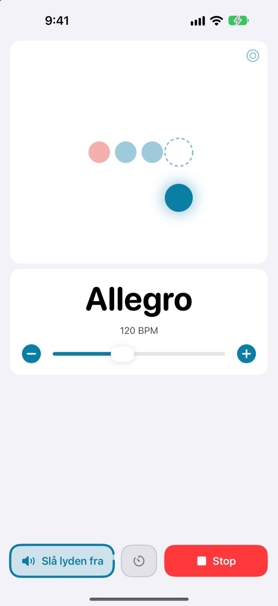
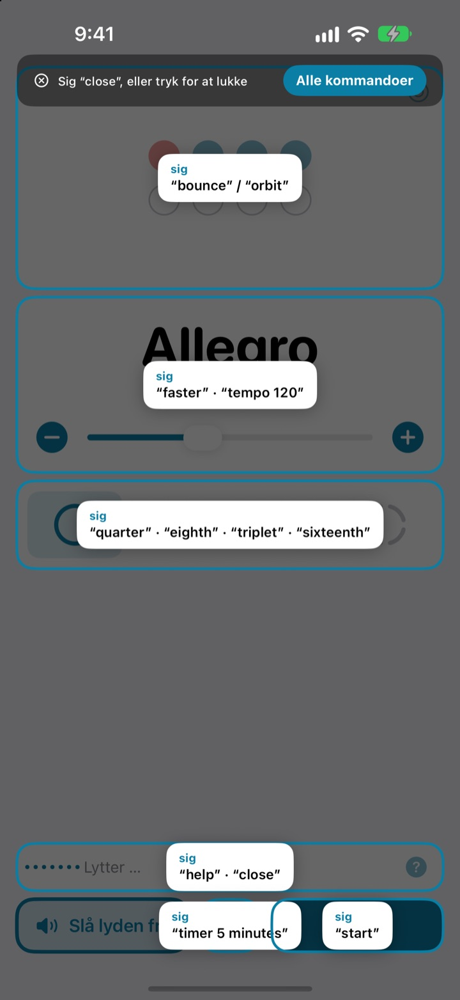
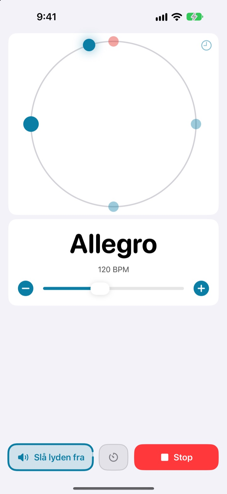
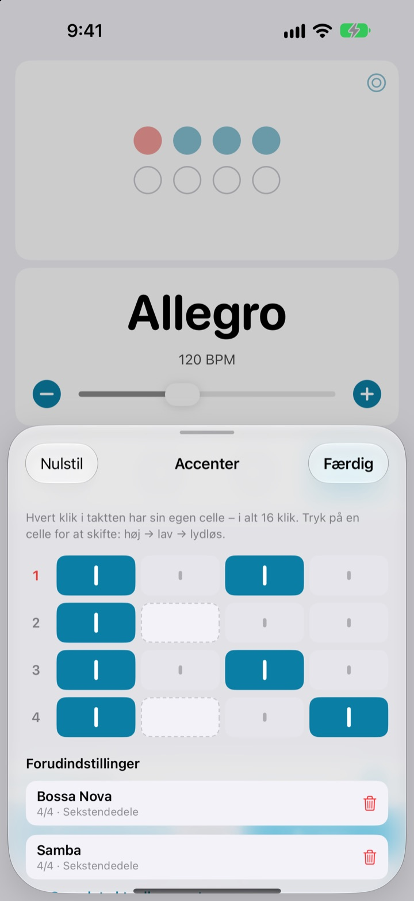

Hænderne på instrumentet.
Tempoet med stemmen.
Sig faster midt i frasen, så speeder klikket op. Du skal hverken stoppe eller række ud efter skærmen. Kommandoerne er korte engelske ord.
Hele metronomen og stemmestyringen er gratis.

Prøv det højt
Tryk på en kommando, eller slå mikrofonen til og sig den på engelsk. Skru op for lyden, den klikker.
Har du mistet grooven bare for at justere tempoet?
Læg buen fra dig, hold plekteret i munden, tryk to gange på skærmen, og den fornemmelse, du lige havde fundet, er væk. Med Not My Tempo skifter du tempo med et enkelt ord, lige der, hvor du står.
Sig det, så følger den med
Korte engelske ord som start, faster og tempo 120. Appen lytter, så snart du åbner den, uden at du skal slå Stemmestyring i iOS eller en tilgængelighedsindstilling til.
Glemt en kommando? Sig help, så vises alt, hvad du kan sige, på skærmen.

Se slaget også
Vælg mellem hop, kredsløb og ring. Første slag er rødt og klikker kraftigere.
Tryk med på kredsløbet, og se, hvor tæt du ramte.

Gem accenterne til hver sang
Sæt hvert klik i takten til højt, lavt eller lydløst, og gem det som en forudindstilling. Byg dit bossanova- eller sambamønster én gang, og vælg det bare næste gang. (Pro)

Tre trin, så er du i gang
- 1
Åbn appen
Den begynder straks at lytte.
- 2
Giv adgang til mikrofonen
Den spørger én gang om mikrofon og talegenkendelse.
- 3
Tal eller tryk
Alle kommandoer har også en knap på skærmen.
Det kan du sige
- start · stop
- afspil, pause
- faster · slower
- 5 BPM hurtigere eller langsommere
- up · down
- 1 BPM hurtigere eller langsommere
- tempo 120
- spring direkte til et tempo
- double · half
- dobbelt så hurtigt, halvt så hurtigt
- three beats
- skift taktart
- quarter · eighth · triplet · sixteenth
- underdeling i fjerdedele, ottendedele, trioler, sekstendedele
- louder · quieter · mute
- klikket højere, lavere, slå lyden fra
- volume 60
- indstil lydstyrken i procent
- bounce · orbit
- skift slagvisning
- timer 5 minutes
- indstil en øvetimer
- practice
- tempoet stiger, mens du øver (Pro)
- tune
- åbn stemmeapparatet (Pro)
- help
- vis alle kommandoer
- close · done
- luk et panel
Talegenkendelsen bruger amerikansk engelsk, så kommandoerne siger du på engelsk. Resten af appen er på dansk, og alle kommandoer kan også gives med et tryk.
Metronomen er gratis. Pro er der, når du vil have mere.
Gratis
- Alle stemmekommandoer
- Taktarter fra 1 til 8 slag, med betonet første slag
- Underdeling i fjerdedele, ottendedele, trioler og sekstendedele
- Tre visninger: hop, kredsløb og ring
- Tap-tempo og timingtjek
- Øvetimer
Not My Tempo Pro
- Øvetilstand: lægger et par BPM til med få takters mellemrum, til du når dit måltempo
- Accenteditor med forudindstillinger til hver sang
- Kromatisk stemmeapparat
Årligt abonnement med gratis prøveperiode, eller et engangskøb for evigt
Stemmestyring og tilgængelighedsfunktioner forbliver gratis for alle. Købte du appen, før Pro fandtes? Så har du allerede alle Pro-funktionerne.
Ofte stillede spørgsmål
Kan jeg tale dansk?
Talegenkendelsen bruger amerikansk engelsk, så kommandoerne er korte engelske ord som start og faster. Dem lærer du hurtigt, og alle kommandoer kan også gives med et tryk. Resten af appen er på dansk.
Den kan ikke høre mig.
Tjek, at mikrofonstatussen er “Lytter”. Hvis den er slået fra, skal du trykke på “Lyt”. I et støjende rum, eller hvis du spiller gennem en højttaler, hjælper hovedtelefoner, så klikket ikke siver ind i mikrofonen.
Lytningen slog sig selv fra.
For at spare på batteriet holder lytningen op, hvis der ikke kommer en kommando i nogle minutter. Tryk på “Lyt” for at slå den til igen.
Tempoet blev det halve eller det dobbelte.
Sig double eller half for at rette det.
Hvordan bruger jeg stemmeapparatet?
Sig tune, eller tryk på bølgeknappen på tempokortet. Spil en tone: Når indikatoren kommer ind i den grønne zone, er du stemt rent. Sig close for at lukke.
Jeg bruger allerede Stemmestyring i iOS.
Slå appens egen mikrofon fra, og styr den med knappernes navne. Alle knapper har VoiceOver-etiketter.
Bliver min stemme sendt nogen steder hen?
Nej. Tale genkendes på din enhed og bliver aldrig optaget, gemt eller sendt videre. Metronomen, stemmestyringen og stemmeapparatet virker uden internet.
Hvordan opsiger jeg abonnementet?
I Indstillinger > Apple-konto > Abonnementer. Det årlige abonnement fornyes automatisk, medmindre du opsiger det mindst 24 timer før periodens udløb. Køb for evigt betales én gang.
Spørgsmål eller feedback? Skriv til leeo@kakao.com.